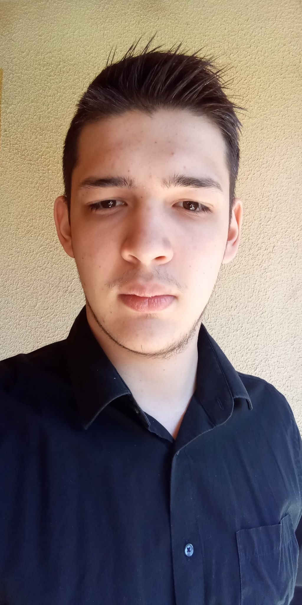

BemutatkozásÜdvözletem! Képiró Péter vagyok, gépészmérnök hallgató, hobbifotós, kezdő zenész. TanulmányokGimnáziumot végeztem 2019-ben a Budapest 18. kerületi Sztehlo Gábor Evangélikus Gimnáziumban, ahol kiemelkedő eredményeket értem el. Gépészmérnök:2019-20-as évben felvettek gépészmérnök hallgatónak a Budapesti Mérnöki és Gazdaságtudományi Egyetemre, jelenleg a második félévemben tartok, de kitartóan folytatom tovább tanulmányaimat, remélvén hogy egyszer eltudjak helyezkedni az iparnak valamelyik terében. Hobbifotós:
Zenész:Körülbelül egy éve elkezdtem elektronikus gitáron játszani. Annyira megtetszett, hogy egy bandának a tagja lettem. Ez nagyban megnövelte a csapatmunka késségemet, együttdolgozást más emberekkel és odafigyelést, megértést tanított. |
Kövess Instagramon! |